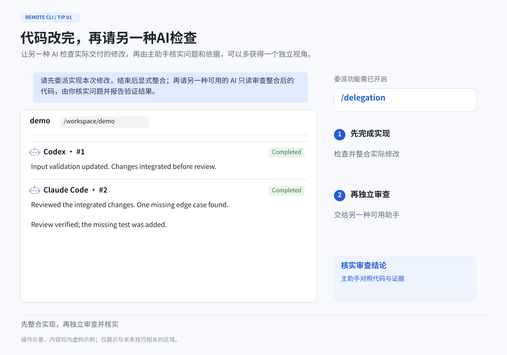01 · 代码改完，再请另一种AI检查让另一种 AI 检查实际交付的修改，再由主助手核实问题和依据，可以多获得一个独立视角。使用方式委派已启用且目标后端可用时，要求先完成并整合实现，再交给另一种 AI 审查。请先委派实现本次修改，结束后显式整合；再请另一种可用的 AI 只读审查整合后的代码，由你核实问题并报告验证结果。适用范围审查应基于已整合的修改；Git 助手的修改不会自动合并，审查结论仍需主助手核实。下载 PNG · 可编辑 SVG
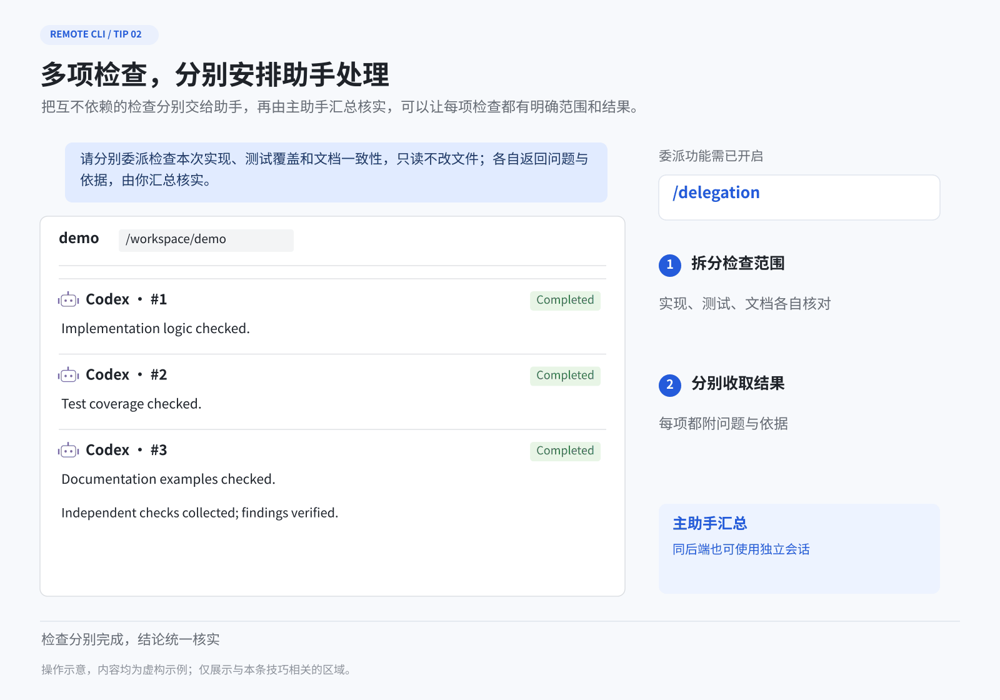02 · 多项检查，分别安排助手处理把互不依赖的检查分别交给助手，再由主助手汇总核实，可以让每项检查都有明确范围和结果。使用方式委派可用时，分别说明实现、测试和文档的检查范围，并要求各助手只读返回依据。请分别委派检查本次实现、测试覆盖和文档一致性，只读不改文件；各自返回问题与依据，由你汇总核实。适用范围同一种后端也可用独立会话；复用会话可能保留历史，背景和结论不会自动共享，“只读”是任务要求。下载 PNG · 可编辑 SVG
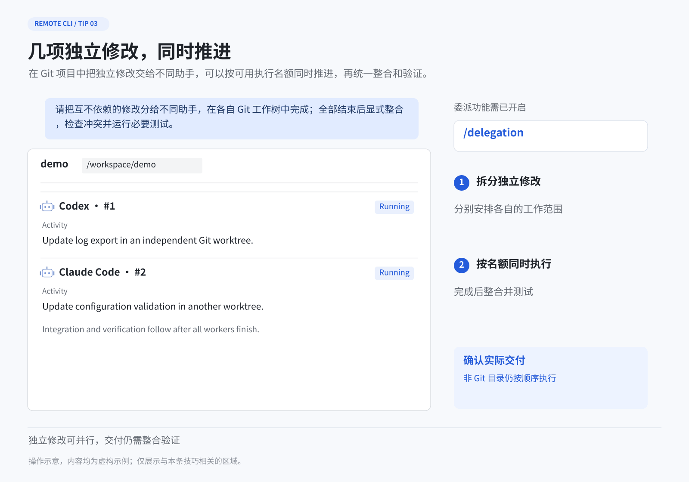03 · 几项独立修改，同时推进在 Git 项目中把独立修改交给不同助手，可以按可用执行名额同时推进，再统一整合和验证。使用方式明确各项修改互不依赖，要求助手分别在 Git 工作树完成，全部结束后由主助手整合并验证。请把互不依赖的修改分给不同助手，在各自 Git 工作树中完成；全部结束后显式整合，检查冲突并运行必要测试。适用范围Git 按可用名额并发，非 Git 串行；修改需显式整合，不会自动提交或推送。工作树不是系统沙箱。下载 PNG · 可编辑 SVG
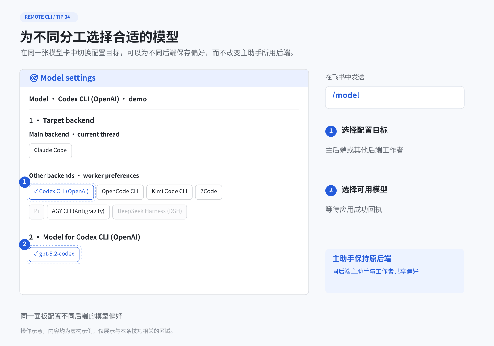04 · 为不同分工选择合适的模型在同一张模型卡中切换配置目标，可以为不同后端保存偏好，而不改变主助手所用后端。使用方式任务和队列空闲后发送 /model，先选主后端或其他后端的工作者偏好，再选可用模型并等待确认。/model适用范围设置按当前线程和后端用于后续任务；同后端主助手与工作者共享模型和思考强度，不能逐个独立设置，查看其他目标不切换主后端。下载 PNG · 可编辑 SVG
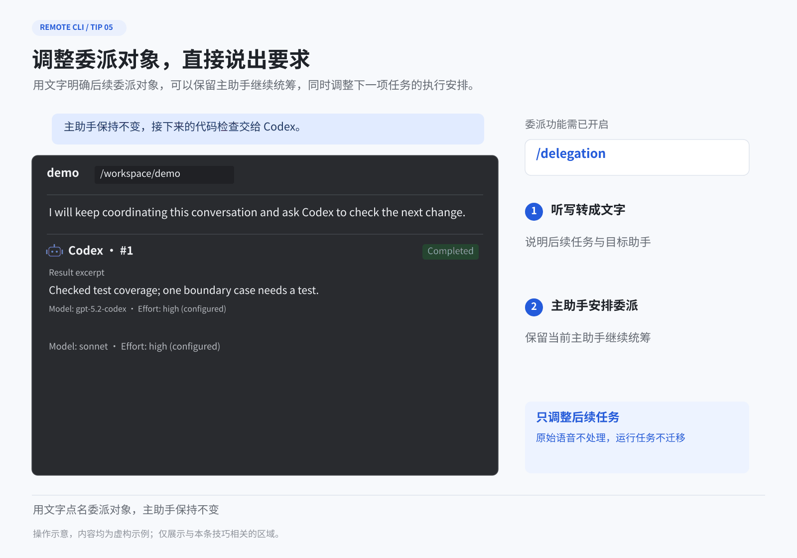05 · 调整委派对象，直接说出要求用文字明确后续委派对象，可以保留主助手继续统筹，同时调整下一项任务的执行安排。使用方式使用手机听写转成文字发送，明确后续任务要交给哪种已安装、已登录且可委派的后端。主助手保持不变，接下来的代码检查交给 Codex。适用范围原始飞书语音不会被处理，需先听写成文字；安排只影响后续委派，不切换主助手或迁移运行中的任务。下载 PNG · 可编辑 SVG
06 · 根据可用额度，调整后续分工根据自己已确认的服务额度，手动把后续工作分配给其他可用后端，可以调整接下来的分工。使用方式确认目标服务还有可用额度及可用后端后，用文字说明后续任务的委派安排。后续资料检查改用 Kimi，你继续负责整体任务和结果汇总。适用范围系统不会自动汇集额度、转移余额或迁移运行中的任务；已安装仍需登录、有可用额度并满足委派条件。下载 PNG · 可编辑 SVG
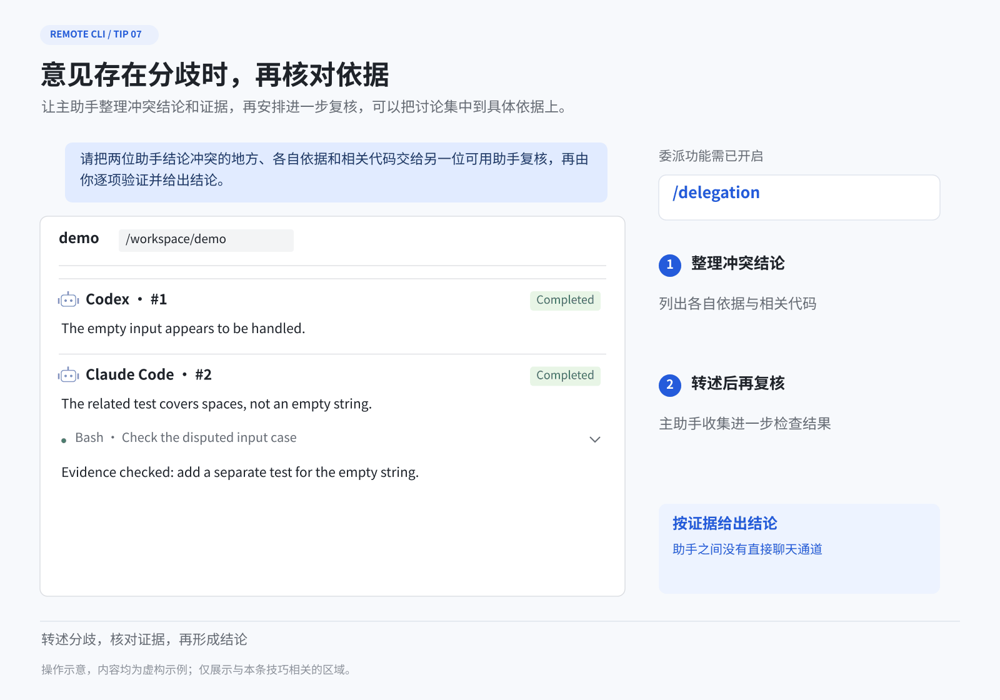07 · 意见存在分歧时，再核对依据让主助手整理冲突结论和证据，再安排进一步复核，可以把讨论集中到具体依据上。使用方式要求主助手转述分歧、证据和相关代码，再交给可用助手复核，最后逐项验证。请把两位助手结论冲突的地方、各自依据和相关代码交给另一位可用助手复核，再由你逐项验证并给出结论。适用范围主助手显式转述分歧和证据，不是助手之间直接聊天；旧对话和结论不会自动共享，讨论不保证正确。下载 PNG · 可编辑 SVG
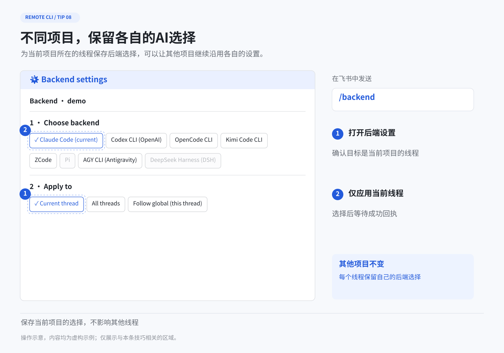08 · 不同项目，保留各自的AI选择为当前项目所在的线程保存后端选择，可以让其他项目继续沿用各自的设置。使用方式发送 /backend，保持 Current thread 后选择已安装、已登录的后端；旧版文本用 /backend <index> @。/backend /backend <index> @适用范围选择只影响当前线程；使用本次列表序号，等线程空闲、切换成功后再发任务。下载 PNG · 可编辑 SVG
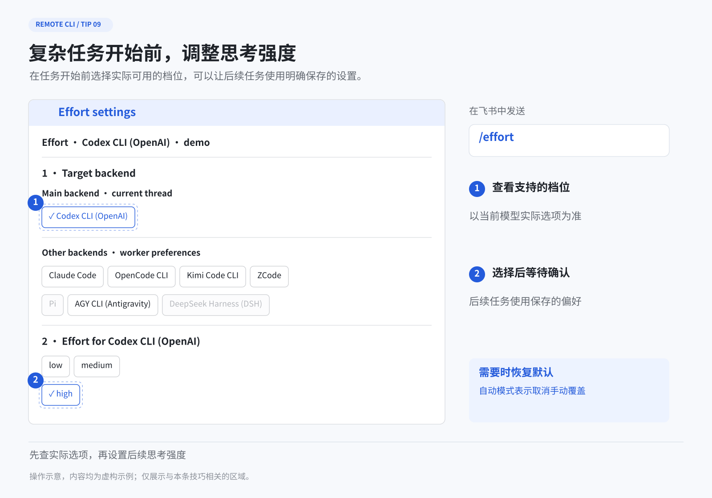09 · 复杂任务开始前，调整思考强度在任务开始前选择实际可用的档位，可以让后续任务使用明确保存的设置。使用方式任务和队列空闲后发送 /effort，按当前模型提供的选项设置；需要恢复默认时用 /effort auto。/effort /effort auto适用范围档位取决于后端、版本和模型；auto 取消手动覆盖，调高不保证更准确或更快。下载 PNG · 可编辑 SVG
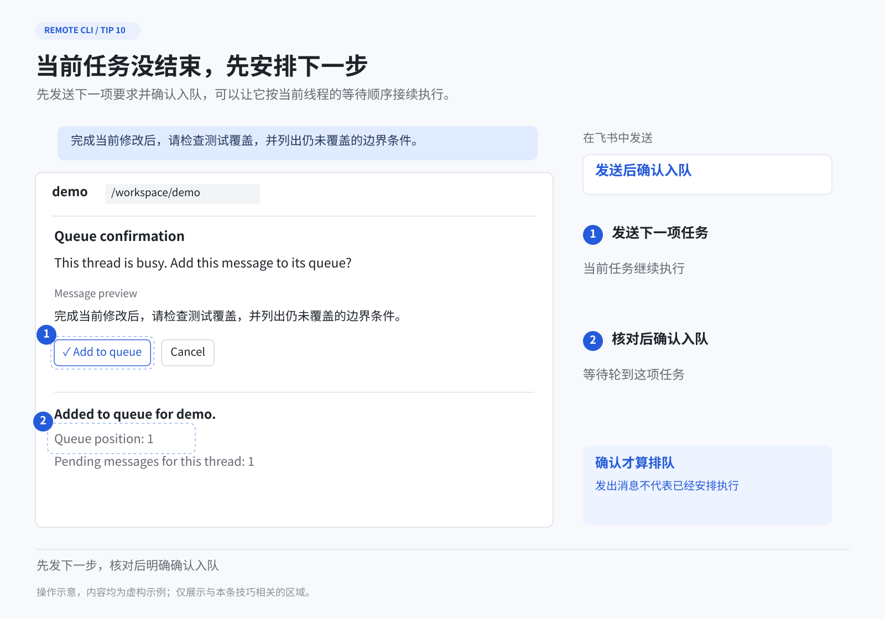10 · 当前任务没结束，先安排下一步先发送下一项要求并确认入队，可以让它按当前线程的等待顺序接续执行。使用方式当前线程忙时发送下一项任务，核对确认卡里的线程和内容，再点 Add to queue；可用 /queue 查看。完成当前修改后，请检查测试覆盖，并列出仍未覆盖的边界条件。适用范围必须明确确认才会入队；未确认或已过期不会执行，队列只存内存，服务重启不保留。下载 PNG · 可编辑 SVG
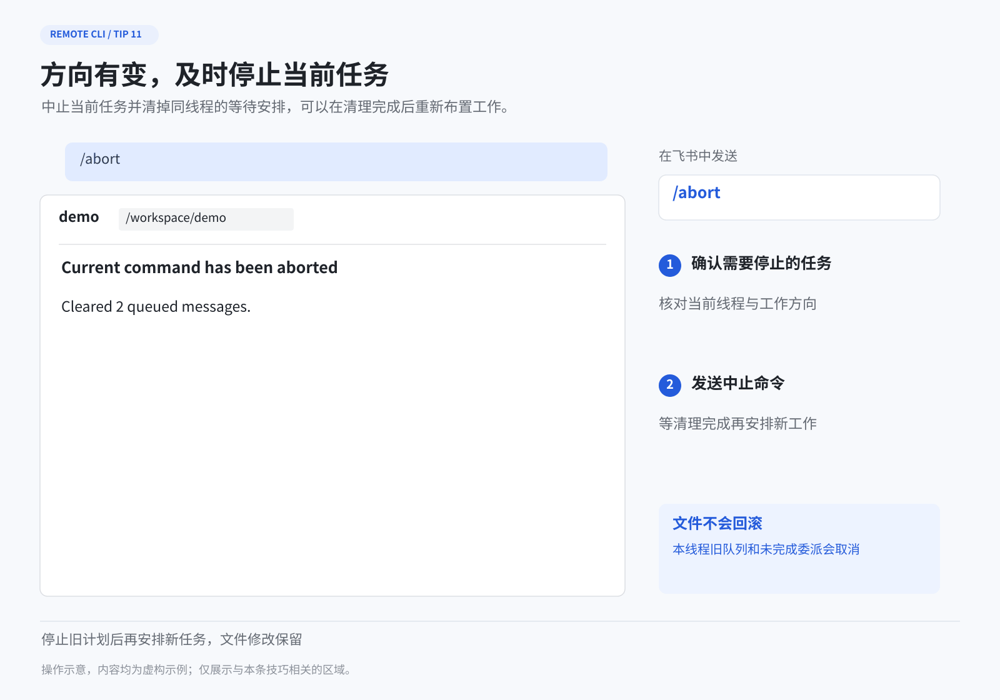11 · 方向有变，及时停止当前任务中止当前任务并清掉同线程的等待安排，可以在清理完成后重新布置工作。使用方式确认当前线程后发送 /abort，等待停止和清理结果，再安排新任务。/abort适用范围会清除本线程已确认和待确认的队列，并取消未完成的委派；已写入的文件不会回滚，其他线程不受影响。下载 PNG · 可编辑 SVG
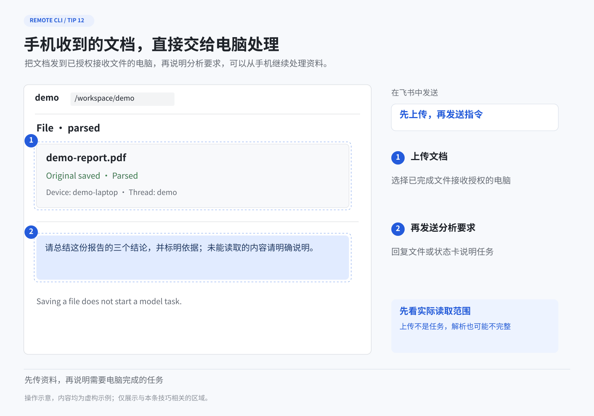12 · 手机收到的文档，直接交给电脑处理把文档发到已授权接收文件的电脑，再说明分析要求，可以从手机继续处理资料。使用方式在已启用并完成文件接收授权的设备上，先向飞书机器人上传文件，再回复原文件或状态卡说明任务。请总结这份报告的三个结论，并标明依据；未能读取的内容请明确说明。适用范围上传不会自动启动任务或复制到项目目录；解析有范围限制，不含扫描件 OCR 和加密文档，保存成功不代表已完整读取。下载 PNG · 可编辑 SVG
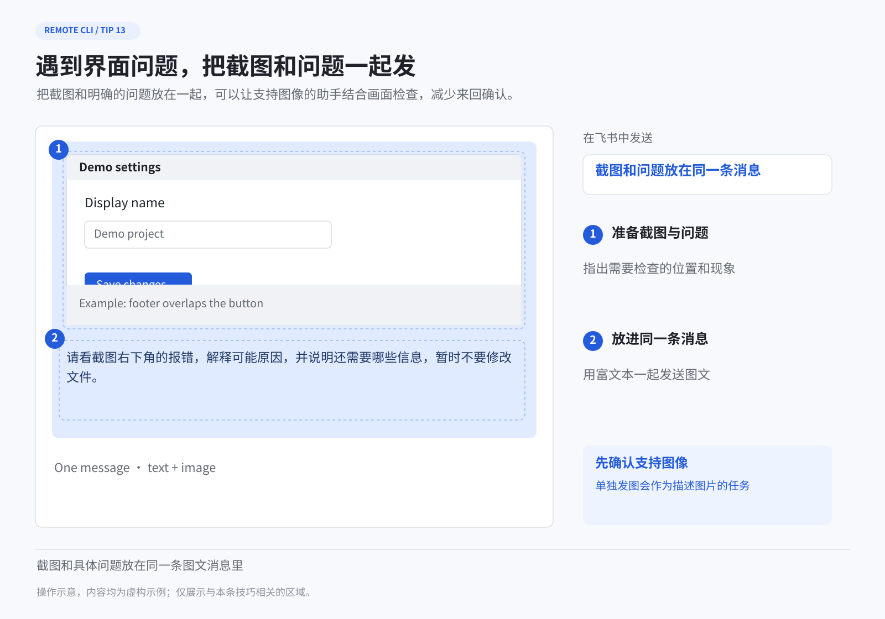13 · 遇到界面问题，把截图和问题一起发把截图和明确的问题放在一起，可以让支持图像的助手结合画面检查，减少来回确认。使用方式确认当前后端支持图像后，在同一条飞书富文本消息中放入截图和问题，再一起发送。请看截图右下角的报错，解释可能原因，并说明还需要哪些信息，暂时不要修改文件。适用范围AGY 只收文本，DSH 取决于连接能力和所选模型；单独发图会按默认的描述图片请求执行。下载 PNG · 可编辑 SVG
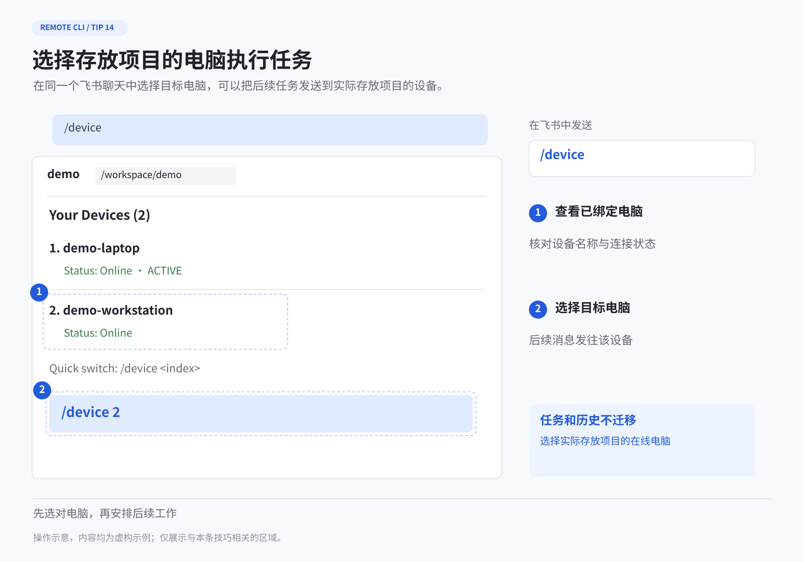14 · 选择存放项目的电脑执行任务在同一个飞书聊天中选择目标电脑，可以把后续任务发送到实际存放项目的设备。使用方式先发送 /device 查看已绑定电脑和连接状态，再用 /device <index> 选择在线的目标电脑。/device /device <index>适用范围按本次列表序号选择；切换只影响后续消息，不会将运行中的任务、项目文件或会话历史迁移到另一台电脑。下载 PNG · 可编辑 SVG
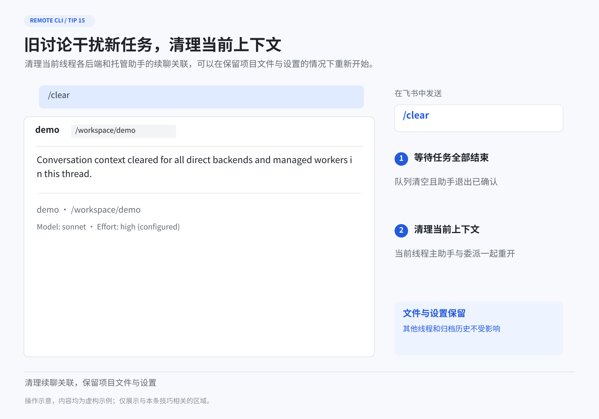15 · 旧讨论干扰新任务，清理当前上下文清理当前线程各后端和托管助手的续聊关联，可以在保留项目文件与设置的情况下重新开始。使用方式等当前任务、队列和委派助手全部结束且退出已确认后，发送 /clear 或同义命令 /new。/clear /new适用范围CLI 1.6.177 起重置本线程全部后端和托管助手的续聊关联；文件、Git 产物、归档历史、登录和设置保留，其他线程不受影响。下载 PNG · 可编辑 SVG
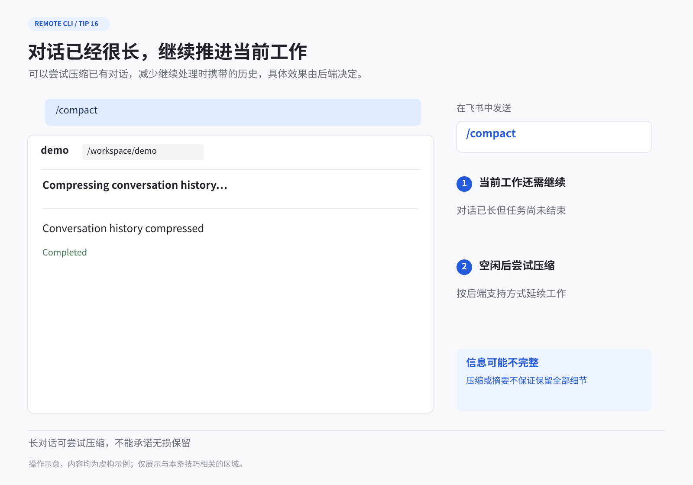16 · 对话已经很长，继续推进当前工作可以尝试压缩已有对话，减少继续处理时携带的历史，具体效果由后端决定。使用方式任务和队列空闲后发送 /compact，在支持此功能的后端上尝试压缩后继续原任务。/compact适用范围后端采用原生压缩或摘要后重开，不保证保留全部细节；AGY 摘要失败可能直接重置，成功提示也不代表摘要已保留。下载 PNG · 可编辑 SVG
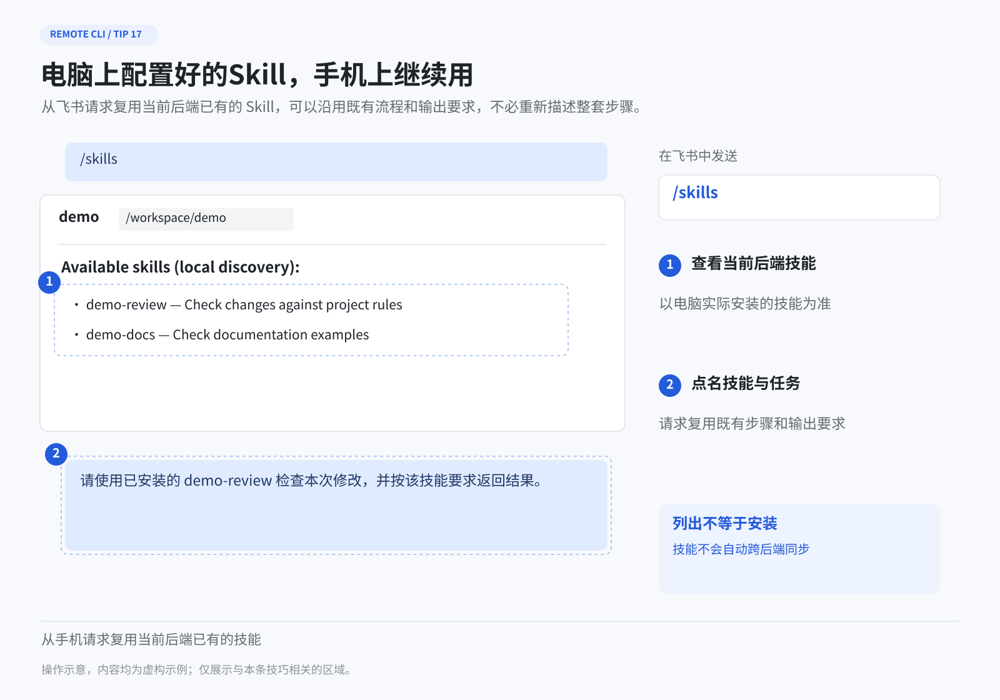17 · 电脑上配置好的Skill，手机上继续用从飞书请求复用当前后端已有的 Skill，可以沿用既有流程和输出要求，不必重新描述整套步骤。使用方式先发送 /skills 查看当前后端的技能，再用普通文字点名已安装的实际技能并说明任务。/skills 请使用已安装的「实际技能名」检查本次修改，并按该技能要求返回结果。适用范围Claude 可用实际技能命令；Codex 仅本地发现，不支持 TUI 透传。列出不等于安装或加载，不会自动跨后端同步；DSH 不支持 /skills。下载 PNG · 可编辑 SVG